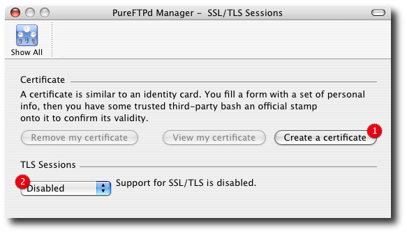
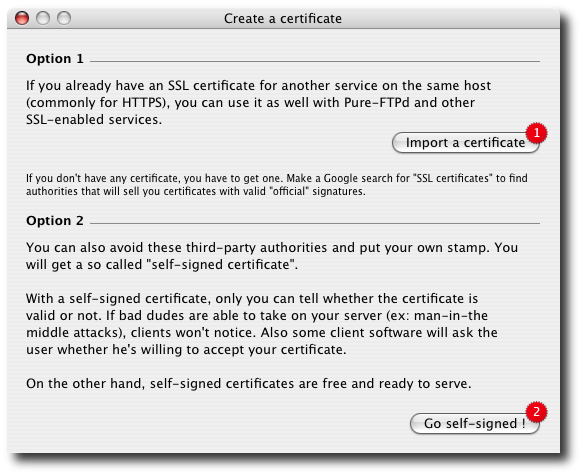
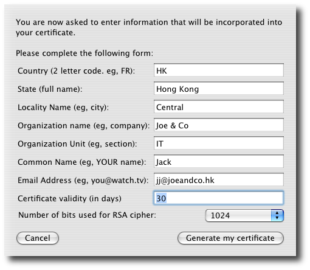

PureFTPd Manager - SSL/TLS SessionsEasily create (or import) an SSL/TLS certificate, which is required for a form of encrypted and secured FTP called FTP-SSL/TLS.

2. Set your TLS Options : Disabled / Mixed mode (for both SSL/TLS enabled and standard FTP clients) / TLS Only (no clear login session will occur but Create a new certificate Once you clicked the Create a certificate button, a new window will appear.

2. To create a certificate that isn't validated by anyone else, but is perfectly fine for personal use or use with colleagues, click Go Self-Signed! After clicking the Go Self-Signed! Button, fill out the dialog that appears, entering values in every field. These values aren't cross-checked by anyone but you--you can enter "nonsense" into every field but the two-letter ones and it will still work. But I recommend that you include useful details. When I create a certificate like this, I change the Certificate Validity (in Days) field from 30 to 300, because I don't want to create a new one each month. You can also increase the number of bits in the certificate; this decreases the chance of the certificate being broken, as unlikely as that now seems.

4. From the TLS Sessions menu, leave Disabled selected, if you don't want to allow SSL/TLS sessions; otherwise, choose Mixed Mode to allow clients that support FTP-SSL/TLS to use it, or choose TLS Only in order to restrict access to just those clients with TLS support. That last option might be useful only for very specific projects in which security is paramount. Clients supporting SSL/TLS on Mac OS X I recommend Cyberduck because I use it and I like it. There are a bunch out there supporting SSL/TLS. Please read README.TLS for more. |